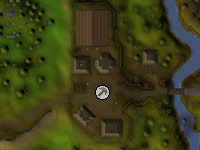
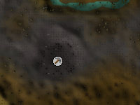

")
Mining - Mining Sites
Introduction
When it is time to extract more valuable ores, it is advisable that you study the locations of the various mines across RuneScape. Try to familiarise yourself with the usefulness of each one, as some are more popular than others. It will take longer to mine the same amount of ore in busier mines than it will in less populated ones.
Sites
The table below shows some of the sites non-members can mine from.
| Site | Location | Available Ore Rocks |
![[image: al kharid mining site]](../../img/main/kbase/skills/mining/maps/mining_site_1.jpg "al kharid mining site") |
North-west of the Duel Arena | 3 Coal 5 Silver 2 Mithril 9 Iron 2 Adamantite 3 Copper 2 Gold 1 Tin |
![[image: bandit camp mining site]](../../img/main/kbase/skills/mining/maps/mining_site_2.jpg "bandit camp mining site") |
South-west of the Lava Maze, Wilderness | 31 Coal 19 Mithril 16 Iron 8 Adamantite |
|  | Barbarian Village | 4 Coal 5 Tin |
![[image: crafting guild mining site]](../../img/main/kbase/skills/mining/maps/mining_site_4.jpg "crafting guild mining site") |
In fenced area of the Crafting Guild | 7 Gold 6 Silver 6 Clay |
![[image: north crandor mining site]](../../img/main/kbase/skills/mining/maps/mining_site_5.jpg "north crandor mining site") |
North Crandor Island | 7 Coal 1 Mithril 3 Gold |
![[image: south crandor mining site]](../../img/main/kbase/skills/mining/maps/mining_site_6.jpg "south crandor mining site") |
South Crandor Island | 3 Coal 3 Adamantite 7 Mithril |
|  | North-west of Edgeville, Wilderness | 34 Coal |
![[image: north edgeville mining site]](../../img/main/kbase/skills/mining/maps/mining_site_8.jpg "north edgeville mining site") |
North Edgeville, Wilderness | 3 Coal 2 Iron |
![[image: edgeville dungeon]](../../img/main/kbase/skills/mining/maps/mining_site_9.jpg "edgeville dungeon") |
South-east, Edgeville dungeon | 2 Adamantite 1 Mithril 6 Coal 3 Silver 3 Iron 2 Tin 2 Copper |
![[image: lava maze runite mining site]](../../img/main/kbase/skills/mining/maps/mining_site_10.jpg "lava maze runite mining site") |
North of Lava Maze, Wilderness | 2 Runite |
![[image: lumbridge swamp training mining site]](../../img/main/kbase/skills/mining/maps/mining_site_11.jpg "lumbridge swamp training mining site") |
Lumbridge Swamp, south-east of Lumbridge Castle | 5 Copper 5 Tin |
![[image: south-west lumbridge swamp mining site]](../../img/main/kbase/skills/mining/maps/mining_site_12.jpg "south-west lumbridge swamp mining site") |
Lumbridge Swamp, south-west corner | 2 Adamantite 5 Mithril 7 Coal |
![[image: rimmington mining site]](../../img/main/kbase/skills/mining/maps/mining_site_13.jpg "rimmington mining site") |
North-east of Rimmington | 2 Gold 6 Iron 2 Tin 2 Clay 5 Copper |
![[image: south-east varrock mining site]](../../img/main/kbase/skills/mining/maps/mining_site_14.jpg "south-east varrock mining site") |
South-east Varrock | 9 Copper 6 Tin 4 Iron |
![[image: south-west varrock mining site]](../../img/main/kbase/skills/mining/maps/mining_site_15.jpg "south-west varrock mining site") |
South-west Varrock | 3 Iron 3 Silver 8 Tin 3 Clay |
| See Mining Extra Features for more information about the Dwarven Mine. | South of Ice mountain. Must enter through a trap door. | 5 Clay 11 Tin 7 Copper 12 Iron 11 Coal 2 Gold 2 Mithril 3 Adamantite |
| See Mining Extra Features for more information about the Mining Guild. | Down ladders, east Falador, south of the east bank (or through gate in Dwarven Mine) | 34 Coal 5 Mithril |
Click here to view the Mining FAQs

More articles in
Mining
|
|
|
Further Help
If this article does not help you, you may find the following sections of the RuneScape site helpful:
|
|